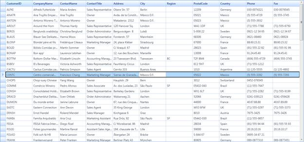

The GridDataControl selection border can be customized using the HighlightSelectionBorder and HighlightSelectionBorderWidth properties. The HighlightSelectionBorder helps you to change the color of the selection border. With the HighlightSelectionBorder property, you can easily identify a record in the GridDataControl. The HighlightSelectionBorderWidth is used to set thickness for the selection border when you select the record using the mouse.
The following code examples show how to customize the GridDataControl selection border using the HighlightSelectionBorder and HighlightSelectionBorderWidth properties.
 To enable these properties, you have to set the
ExcelLikeSelectionFrame as True.
To enable these properties, you have to set the
ExcelLikeSelectionFrame as True.
|
[XAML]
<syncfusion:GridDataControl Name="GridDataControl1" AutoPopulateColumns="True" AutoPopulateRelations="False" UpdateMode="LostFocus" NotifyPropertyChanges="True" HighlightSelectionBorder="AliceBlue" HighlightSelectionBorderWidth="3" ExcelLikeSelectionFrame="True"> |
[C#] public MainWindow() { InitializeComponent(); this.GridDataControl1.HighlightSelectionBorder = Brushes. Black; this.GridDataControl1.HighlightSelectionBorderWidth = 2d; this.GridDataControl1.ExcelLikeSelectionFrame = true; }
|
The following screen shot is a sample output for the above border settings in the GridDataControl.

Figure 278: GridDataControl with customized selection border